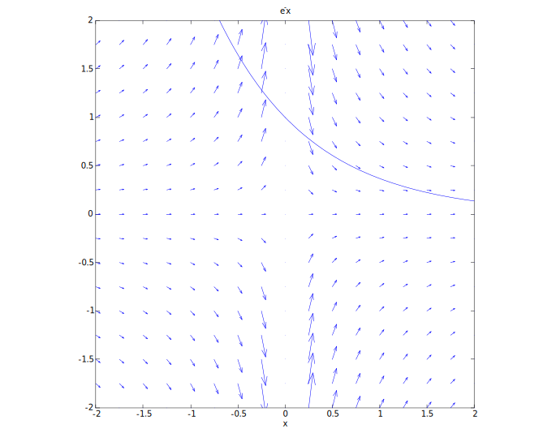
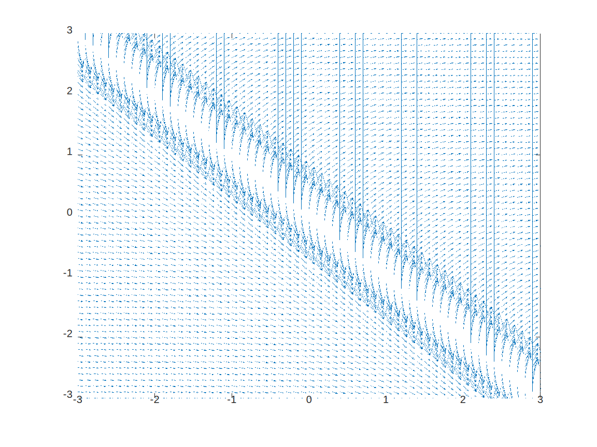
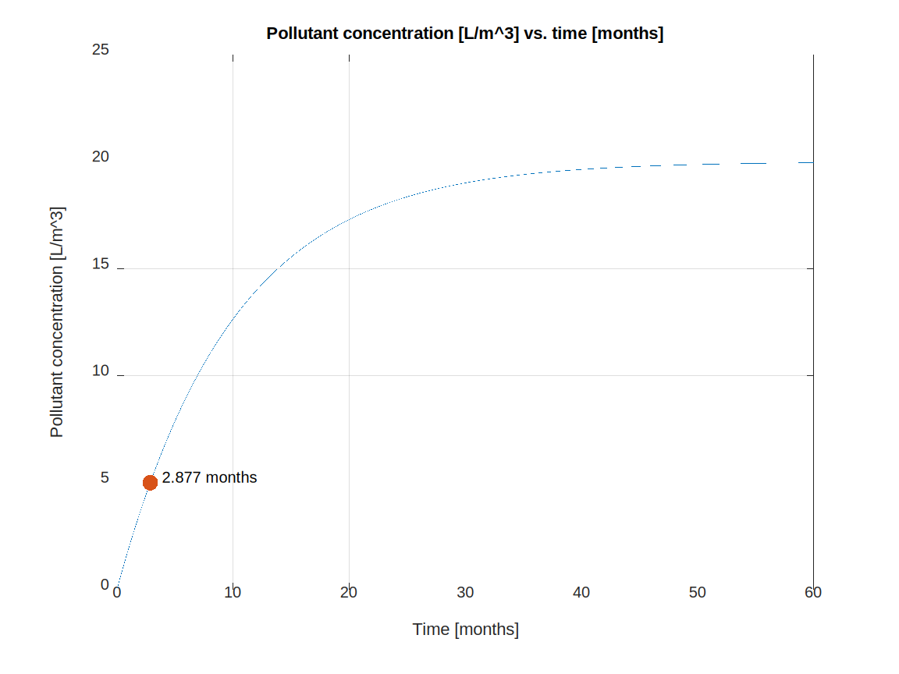
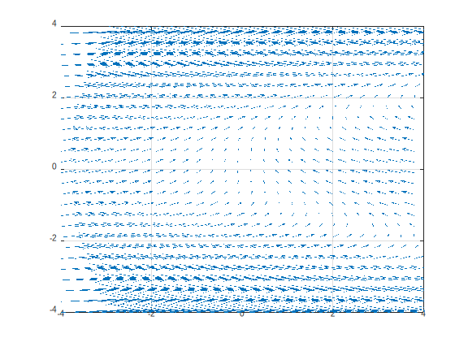
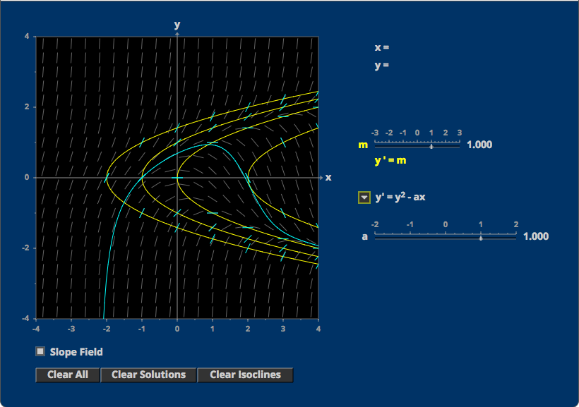
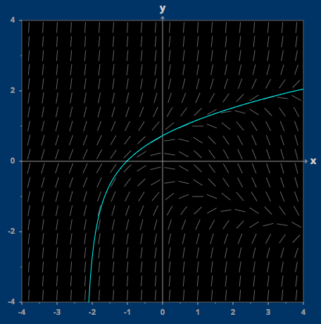
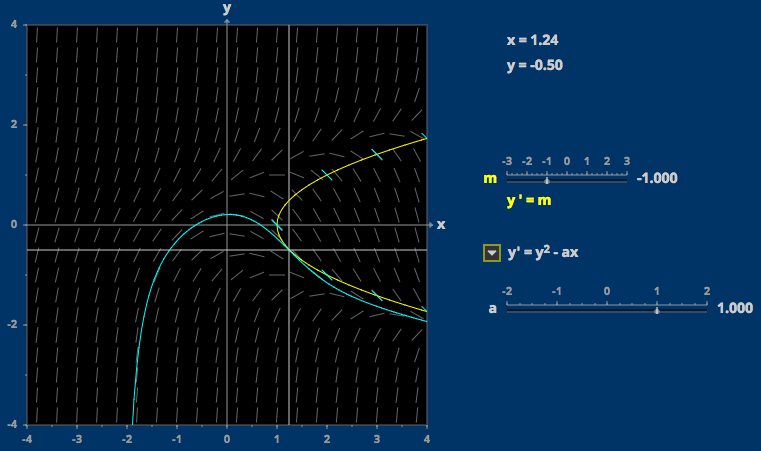

$$$\require{cancel}$$$
$$y' = \left( {y-1\over x+1}\right)^2$$ $${dy(x)\over dx} = {(y-1)^2\over (x+1)^2}$$ $$\int {1\over (x+1)^2}\;dx = \int {1\over (y(x)-1)^2}\;dy(x)$$ Solve left side: $$\int {1\over (x+1)^2}\;dx$$ Make the substitution $$$u=(x+1)$$$ and therefore $$$du = dx$$$ $$\int u^{-2} du = -u^{-1}$$ $$-{1\over x+1}$$ Solve right side: $$\int {1\over (y(x)-1)^2}\;dy(x)$$ Make the substitution $$$u = (y(x)-1)$$$ and therefore $$$du=dx$$$ $$\int u^{-2}\;du = -u^{-1}$$ $$-{1\over y(x)-1}$$ Substitute back in: $$-{1\over x+1} +C = -{1\over y(x)-1}$$ $${1-C(x+1)\over x+1} = {1\over y(x)-1}$$ $${1 - C(x+1)} = {x+1\over y(x)-1}$$ $$(y(x)-1)\left(1-C(x+1)\right) = x+1 $$ $$y(x)-1 = {x+1\over 1-C(x+1)}$$ $$\bbox[5px, border:2px solid black] {y(x) = {x+1\over 1 - C(x+1)}+1}$$
$$\bbox[5px, border:2px solid black] {{dP(t)\over dt} = k\sqrt{P}} $$
$$\bbox[5px, border:2px solid black] {{dv(t)\over dt} = kv(t)^2}$$
$$\bbox[5px, border:2px solid black] {{dN(t)\over dt} = k(P-N(t))}$$
Let's model this problem as: $${df(t)\over dt} = kf(t)$$ $$f(t) = Ce^{kt}$$ with k representing the decline parameter of the drug. We need to find out both C and k. We know the following: $$f(0) = {45mg\over 1kg} * 50kg = 2250\;mg$$ 5 hours earlier, we had double the amount of drug: $$f(5) = {2f(0)} = 2 * 2250 = 4500\;mg$$ So we can then solve for $$$C,k$$$ to get a general formula: $$f(0) = 2250 = Ce^{k0}$$ $$C = 2250$$ $$f(5) = 4500 = 2250e^{k5}$$ $$2 = e^{5k}$$ $$k = {ln(2)\over 5}$$ So we have $$f(t) = 2250e^{ln(2)t\over 5}$$ Finding f(1) is therefore: $$f(1) = 2250e^{ln(2)*1\over 5}$$ $$f(1) = 2250e^{ln(2)\over 5}$$ So to anesthetize the dog for an hour, we should give an amount equal to: $$f(1) = \bbox[5px, border:2px solid black] {2584.57\;mg}$$
Let's model the system as follows: $$s(t) = rt + O$$ where $$$s(t)$$$ is the amount of snow per unit distance $$$d$$$ at time $$$t$$$, $$$r$$$ being the rate of snowfall. If we let $$$a$$$ be the amount of snow cleared by the snowplow per unit time $$$t$$$, and $$$x$$$ be the position of the snowplow at time $$$t$$$, we can observe the following equation: $${dx\over dt} = {a \over rt + O}$$. This equation states that the rate of movement per unit distance of the snowplow is the amount of snow it can move per unit time divided by how much snow needs to be moved per unit distance. See the following dimensional analysis: $${distance \over time} = {{\text{cu-ft} \over time} \over {{\text{cu-ft} \over time} * time + \text{cu-ft} \over distance}}$$ $${distance \over time} = {distance * {\text{cu-ft} \over time} \over {\text{cu-ft} \over time} * time + \text{cu-ft}}$$ $${distance \over time} = {distance * {\text{cu-ft} \over time} \over \text{cu-ft} + \text{cu-ft}}$$ $${distance \over time} = {distance * \text{cu-ft} \over time * \text{cu-ft}}$$ $${distance \over time} = {distance \over time}$$
$${dy(x)\over dx} + y(x) = 2$$ We want to pick a $$$u(x)$$$ such that $$u(x){dy(x)\over dx} + u(x)y(x) = 2u(x)$$ because we know that this can be represented as $${d\over dx}\left(u(x)y(x)\right) = 2u(x)$$ if we pick $$$u(x)$$$ to be equal to $$${du(x)\over dx}$$$, we realize that $$$u(x)$$$ must equal $$$e^{x}$$$ $${d\over dx}e^{x}y(x) = 2e^{x}$$ $$\int{d\over dx}e^xy(x)dx = \int 2e^{x}dx$$ Using the First fundamental theorem of calculus to reduce the left integral, and solving the right integral yields: $$e^{x}y(x) = 2e^{x} + C$$ dividing through by e^x gives: $$y(x) = 2 + Ce^{-x}$$ The initial condition $$$y(0) = 0$$$ allows us to solve through: $$y(0) = 2 + C$$ So $$$C = -2$$$. $$\bbox[5px, border:2px solid black] {y(x) = 2 + -2e^{-x}}$$
$$xy'-y=x\qquad y(1) = 7$$ First step is to divide through by x. $${dy(x)\over dx} - {1\over x}y(x) = 1$$ Then we try to pick $$$u(x)$$$ to make $$$u(x){-1\over x}={d\over dx}u(x)$$$ Solving this (simpler) differential equation by separation of variables yields: $$\int {1\over u(x)} du = \int -{1\over x}dx$$ $$ln(u(x)) = -ln(x) + C$$ solving for $$$u(x)$$$ gives: $$u(x) = C{1\over x}$$ We don't care about the C because any u(x) works for our use case, so we have: $$u(x){dy(x)\over dx} - u(x){1\over x}y(x) = u(x)$$ We can check the earlier calculation of $$$u(x)$$$ here: $${d\over dx}\left( {1\over x}y(x)\right) = {1\over x }{dy(x)\over dx} - {1\over x^2}y(x)$$ This seems to match with substituting $$$u(x)$$$ $${1\over x}{dy(x)\over dx} - {1\over x^2}y(x) = {1\over x}$$ $${d\over dx}\left({1\over x}y(x)\right) = {1\over x}$$ Solving this for y(x): $$\int {d\over dx}\left({1\over x}y(x)\right) dx = \int {1\over x} dx$$ Again by the first fundamental theorem of calculus: $${1\over x}y(x) = ln(x) + C$$ $$y(x) = xln(x) + Cx$$ we know that y(1) = 7, so $$y(1) = 1*ln(1) + 1*C$$ $$C = 7$$ $$\bbox[5px, border:2px solid black] {y(x) = xln(x) + 7x}$$
$$y' = 1 + x + y + xy\qquad y(0) = 0$$ Rewrite this in standard form: $${dy(x)\over dx} - y(1+x) = 1 + x$$ Find $$$u(x)$$$: $$u(x){dy(x)\over dx} - u(x)y(x)(1+x) = u(x)(1+x)$$ $${d\over dx}\left( u(x) y(x)\right) = u(x)(1+x)$$ Find an appropriate $$$u(x)$$$: $${du(x)\over dx} = -u(x)(1+x)$$ $$\int{-1\over u(x)}\;du(x) = \int (1+x)\;dx$$ $$-ln(u(x)) = x + {x^2\over 2} + C$$ $$u(x) = e^{-\left(x + {x^2\over 2}+C\right)}$$ Ignore the C as before (as any C is going to work), and substitute: $${d\over dx}\left(e^{-\left(x + {x^2\over 2}\right)}y(x)\right) = e^{-\left(x + {x^2\over 2}\right)}(1+x)$$ $$\int {d\over dx}\left(e^{-\left(x + {x^2\over 2}\right)}y(x)\right)dx = \int e^{-\left(x + {x^2\over 2}\right)}(1+x)dx$$ Performing a $$$u$$$-substitution as follows: $$u(x) = x + {x^2\over 2}$$ $${d\over dx}u(x) = (1 + x)$$ We can rewrite the RHS integral as: $$\int e^{-u(x)}\;du$$ and therefore the result of this is: $$-e^{-u(x)} + C$$ or $$-e^{-\left(x + {x^2\over 2}\right)} + C$$ So substituting this back into the original equation and applying the first fundamental theorem of calculus on the LHS integral: $$e^{-\left(x + {x^2\over 2}\right)}y(x) = -e^{-\left(x + {x^2\over 2}\right)} + C$$ $$y(x) = -1 + Ce^{x + {x^2\over 2}}$$ Using the initial value we were given: $$y(0) = -1 + Ce^{0 + {0^2\over 2}}$$ $$C = 1$$ and therefore we can say: $$\bbox[5px, border:2px solid black] {y(x) = -1 + e^{x + {x^2\over 2}}}$$
$$y' = -{y\over x}$$ $${dy(x)\over dx} = -{y\over x}$$ $$\int {1\over y}\;dy(x) = \int -{1\over x} \;dx$$ $$ln(y) = -ln(x) + C$$ $$\bbox[5px, border:2px solid black] {y = Ce^{-x}}$$ Plotting the direction field and the solution curve y(0)=1: 
$$y'=2x+y$$ $${dy(x)\over dx} = 2x + y$$ $${dy(x)\over dx} - y = 2x$$ This is an equation in standard form! It's possible to find a $$$u(x)$$$ such that: $$u(x){dy(x)\over dx} - u(x)y(x) = u(x)2x$$ Pick $$$u(x)$$$ such that $$${du(x)\over dx} = -u(x)$$$: $${du(x)\over dx} = -u(x)$$ $$\int {1\over u(x)}\;du(x) = \int -1\;dx$$ $$ln(u(x)) = -x + C$$ $$u(x) = Ce^{-x}$$ where C can be ignored as this is being used as a multiplying factor. Substituting back in, we see: $$e^{-x}{dy(x)\over dx}-e^{-x}y(x) = e^{-x}2x$$ or in its other form: $${d\over dx}\left(e^{-x}y(x)\right) = e^{-x}2x$$ $$\int {d\over dx}\left(e^{-x}y(x)\right)\;dx = \int e^{-x}2x\;dx$$ Let's reduce the RHS: $$\int e^{-x}2x\;dx$$ Let $$$u=2x$$$, $$$dv=e^{-x}$$$, $$$du = 2$$$, $$$v = -e^{-x}$$$. Integrating by parts we see that since: $$\int u{dv\over dx}\;dx = uv - \int v{du\over dx}\;dx$$ we can say that: $$\int 2xe^{-x}\;dx = -2xe^{-x} - 2\int -e^{-x}\;dx$$ $$-2xe^{-x}+2\int e^{-x}\;dx$$ $$-2xe^{-x}-2e^{-x}$$ $$-2e^{-x}(x+1)$$ After using the first fundamental theorem of calculus on the LHS and substituting this expression in for the RHS: $$e^{-x}y(x) = -2e^{-x}(x+1)+C$$ $$y(x) = -2(x+1)+{C\over e^{-x}}$$ Isocline means solve for some $$$C_1$$$ such that $$$C_1 = 2x + y$$$ So $$$y = C_1 - 2x$$$.
$$y' = x - y$$ $${dy(x)\over dx} = x - y$$ $${dy(x)\over dx} + y = x $$ This is an equation in standard form! $$u(x) * {dy(x)\over dx} + u(x) * y(x) = u(x) * x$$ We notice that this standard form, if $$$u(x)$$$ were equal to $$$du(x) \over dx$$$, would be equivalent to $$$u(x) * {dy(x)\over {dx}} + y(x) * {du(x) \over dx}$$$, and this would correspond to: $${d \over dx} u(x) * y(x) $$
So solving for $$$u(x)$$$ = $$$du(x)\over dx$$$ we get $$$\int {1\over u(x)} du(x) = \int 1 dx $$$, which becomes $$$ln(u(x)) = x + C$$$, or $$$u(x) = Ce^x$$$. Since we are using $$$u(x)$$$ as a multiplying factor, we can drop the $$$C$$$ in this instance.
Multiplying u(x) in we see that we have $$e^x * {dy(x)\over dx} + e^x * y(x) = e^x * x$$ This can be seen to be the derivative: $${d\over dx} \left( e^x * y(x) \right)$$ Setting this equal to the RHS: $${d\over dx} \left( e^x * y(x) \right) = e^x * x$$ Let's solve: $$\int {d\over dx} \left( e^x * y(x) \right) dx = \int e^x * x \ dx $$ Solving the RHS: $$\int e^x * x \ dx$$ Integrate by parts: $$\int u\ dv = uv - \int v\ du$$ Let's pick $$$u = x$$$ and $$${dv(x)\over dx} = e^x$$$.
Then, $$${du(x)\over dx} = 1$$$ and $$$v = e^x$$$.
$$\int x * e^x\ dx = x * e^x - \int e^x\ dx $$ Plugging in the LHS from before: $$e^x * y(x) = e^x * (x - 1) + C$$ $$\bbox[5px, border:2px solid black] {y(x) = (x - 1) + Ce^{-x}} $$
We can perform a quick check here: $$y'(x) = 1 - C * e^{-x}$$ $$y'(x) = x - y(x) = x - (x - 1) - Ce^{-x}$$ $$y'(x) = 1 - C * e^{-x}$$ $$\bbox[5px, border:2px solid black] {1 - C * e^{-x} = 1 - C * e^{-x}} $$
$$y' = {1 \over{x+y}}$$ 
Using euler's method: $$ x_n = {x_{n-1}} + h$$ $$ {y_n} = {y_{n-1}} + h * f(x_0, y_0) $$
For $$$y'=x+y^2$$$, and $$$y(0)=1$$$:
$$$h=0.1$$$
| n | $$$x_n$$$ | $$$y_n$$$ | $$$f(x_n, y_n)$$$ | $$$hf(x_n, y_n)$$$ |
|---|---|---|---|---|
| 0 | 0 | 1 | 1 | 0.100 |
| 1 | 0.1 | 1.10 | 1.22 | 0.122 |
| 2 | 0.2 | 1.22 | 1.69 | 0.169 |
| 3 | 0.3 | 1.39 |
To find out whether the estimate we have for $$$y(0.3)$$$ is low or high, we can solve the equation analytically and check, or we can take the derivative of $$$y'$$$ and check if concave/convex at 0.3.
Taking the derivative of $$${dy\over{dx}} = x + y^2 $$$, the result is $$$y'' = 1$$$, which indicates that the integral curve of y(x) is convex (due to a positive second-derivative). This leads to the conclusion that the approximate y(0.3) given by euler's method is going to underestimate the true value.
Model this as follows: $${dS(t)\over dt} = -{S(t)\over 1000} * 5$$ where: $${dS(t)\over dt}\ =\text{ rate of salt change}$$ $$S(t) =\ \text{amount of salt at t}$$
We can check this model with dimensional analysis: $${kg\over s} = {kg\over \cancel{L}} * {\cancel{L} \over s}$$
Given the initial condition $$$S(0)=100kg$$$, we can solve for the $$$t$$$ at which $$$S(t)=10kg$$$.
This differential equation is separable, and therefore we can write: $$\int {1\over S(t)\ }dS(t) = \int -0.005\ dt$$ $$ln(S(t)) = -0.005t + C$$ $$S(t) = Ce^{-0.005t}$$
Using the initial condition $$$S(0)=100$$$ we can set the two forms of $$$S(0)$$$ equal to each other: $$Ce^{-0.005 * 0} = 100$$ $$Ce^{0} = 100$$ $$C = 100$$
Therefore we have the specific solution: $$S(t) = 100 * e^{-0.005t}$$
Solving for the t in which $$$S(t)=10$$$: $$100 * e^{-0.005t} = 10$$ $$e^{-0.005t} = 0.1$$ $$-0.005t = ln(0.1)$$ $$t = {ln(0.1)\over -0.005}$$ $$\bbox[5px, border:2px solid black] {t \approx 460.517s}$$ $$\bbox[5px, border:2px solid black] {t \approx \text{7m 40.5s}}$$
According to the problem description, the rate of change of pollutant in the lake should be equivalent to the difference between the amount of pollutant entering the lake and the amount of pollutant exiting the lake. Therefore, the current absolute amount of pollutant in the lake divided by the volume of the lake (i.e. the concentration of pollutant in the lake) multiplied by the volume of water exiting should indicate the amount of pollutant exiting the lake, and the concentration of pollutant in the water entering the lake multiplied by the volume of water entering the lake should indicate the amount of pollutant entering the lake.
Therefore, we can write the following equation:
$${dP(t)\over dt} = -{P(t)\over 2 * 10^6} * (2*10^5)+ 10 * 2 * 10^5 $$ where $$P(t) = \text{total pollutant in lake L}$$ $$\text{volume of lake} = 2 * 10^6 \text{ m}^3$$ $$\text{volume of entering water} = \text{volume of exiting water} = 2 * 10^5\text{ m}^3$$ $$\text{entering pollutant concentration} = 10{\text{L}\over \text{m}^3}$$
We can check the units: $${\text{L}\over \text{month}} = {\text{L}\over \cancel{\text{m}^3}} * {\cancel{\text{m}^3} \over \text{month}} + {\text{L}\over \cancel{\text{m}^3}} * {\cancel{\text{m}^3}\over \text{month}}$$
Since dividing P(t) (L of total pollutant) by the total volume of the lake ($$$2 * 10^6$$$ m$$$^3$$$) yields the pollutant concentration in the lake, solving for P(t) should allow us to find $$$t$$$ when the pollutant concentration is $$$5{\text{L}\over \text{m}^3}$$$.
From the first given equation, we can simplifly slightly: $${dP(t)\over dt} = -{P(t)\over 10} + 2 * 10^6$$ $${dP(t)\over dt} + {P(t)\over 10} = 2 * 10^6$$
This is a linear ordinary differential equation in standard form, and we can apply the method of integrating factors to find a solution.
We need $${d\over dt}u(t) = 0.1 * u(t)$$
Separating variables we see that: $$\int {1\over u(t)}du(t) = \int 0.1 dt$$ $$ln(u(t)) = 0.1t+C$$ $$u(t) = Ce^{0.1t}$$
$$u(t) {dP(t)\over dt} + u(t){P(t)\over 10} = u(t)2 * 10^6$$ $$e^{0.1t}\left({dP(t)\over dt}\right) + e^{0.1t}\left({P(t)\over 10}\right) = e^{0.1t}\left(2 * 10^6\right)$$
We notice that the LHS now can be expressed as the derivative of a product: $${d\over dt}\left(e^{0.1t}P(t)\right) = e^{0.1t}\left(2 * 10^6\right)$$
Resolving the integral: $$\int {d\over dt}\left(e^{0.1t}P(t)\right) dt = \int e^{0.1t}\left(2 * 10^6\right) dt$$ $$e^{0.1t}P(t) = e^{0.1t}\left(2 * 10^7\right) + C$$ $$P(t) = 2 * 10^7 + {C \over e^{0.1t}}$$
We know that $$$P(0) = 0$$$ $$0 = P(0) = 2 * 10^7 + {C \over e^{0.1 * 0}}$$ $$0 = 2 * 10^7 + {C}$$ $$C = -2 * 10^7$$ $$P(t) = 2 * 10^7 + {-2 * 10^7 \over e^{0.1t}}$$ $$\bbox[5px, border:2px solid black] {P(t) = 2 * 10^7\left(1-e^{-0.1t}\right)}$$
We can make a new measure $$$U(t) = {P(t)\over 2*10^6}$$$ representing the concentration of pollution (as opposed to the total volume of pollution) in the lake, and therefore have $$\bbox[5px, border:2px solid black] {U(t) = 20 * \left(1-e^{-0.1t}\right)}$$ with $$$U(t)$$$ having the unit $$$\text{L}\over \text{m}^3$$$.
Based on this, we can see that: $$U(\infty) = 20 * \left(1-e^{-0.1 * \infty}\right)$$ $$U(\infty) = 20 * \left(1-e^{-\infty}\right)$$ $$U(\infty) = 20 * \left(1-0\right)$$ $$U(\infty) = 20$$ $$\bbox[5px, border:2px solid black] {\therefore U(t) \rightarrow 20 : t \rightarrow \infty}$$
We would like to solve for $$$t$$$ when $$$U(t) = 5$$$: $$20 * \left(1-e^{-0.1t}\right) = U(t) = 5$$ $$1-e^{-0.1t} = 0.25$$ $$e^{-0.1t} = 0.75$$ $$-0.1t = ln(0.75)$$ $$t = -{ln(0.75)\over 0.1}$$ $$\bbox[5px, border:2px solid black] {t \approx 2.877 \text{ months}}$$
In fact we can verify the graph as well: 
$$k(t) = {k_0 \over (a + t)^2}$$ Note that $$$k(t)$$$ has units of $$$\text{kilo-oryx}\over \text{year}$$$: $${\text{kilo-oryx} \over \text{year}} = {\text{kilo-oryx} * \text{year} \over (\text{year} + \text{year})^2}$$ $${\text{kilo-oryx} \over \text{year}} = {\text{kilo-oryx} * \cancel{\text{year}} \over \text{year}^\cancel{2}}$$ $$\bbox[5px, border:2px solid black] {\therefore a = \text{year}, k_0=\text{kilo-oryx} * \text{year}}$$
We can write the equation representing the oryx population using the new formula for population growth: $$\bbox[5px, border:2px solid black] {{d \over dt}x(t) = {k_0 \over (a + t)^2}x(t)}$$ This indicates that the rate of growth of the oryx population is equivalent to the reproductive rate of the oryxes multiplied by the current amount of oryxes.
We notice that the equation: $${d \over dt}x(t) = {k_0 \over (a + t)^2}x(t)$$ is separable, and we can write: $$\int {1\over x(t)} dx(t) = \int {k_0 \over (a + t)^2} dt$$ $$ln|x(t)| = -{k_0 \over (a + t)} + C$$ $$e^{ln|x(t)|} = e^{-{k_0 \over (a + t)} + C}$$ $$|x(t)| = Ce^{-{k_0 \over (a + t)}}$$ Let $$$C=\pm e^C $$$: $$\bbox[5px, border:2px solid black] {x(t) = Ce^{-{k_0 \over (a + t)}}}$$
At t=0: $$x(0) = Ce^{-k_0 \over (a + 0)}$$ $$x(0) = Ce^{-k_0 \over a}$$ For this to be positive C must be positive. At $$$t = \infty$$$: $$x(\infty) = Ce^{-k_0 \over (a + \infty)}$$ $$x(\infty) = Ce^{-k_0 \over \infty}$$ $$x(\infty) = Ce^{0}$$ $$x(\infty) = C$$ $$$\therefore$$$ the population stabilizes, and the limiting population is $$$\bbox[5px, border:2px solid black] {C}$$$.
We can draw the direction field:

With an integral curve drawn:

We can observe that there is indeed a separatrix at:


It appears as if the point (a, b) at which the integral curve and isocline are tangent to each other is at $$$(1.24, -0.50)$$$ according to the graph.
Solving for this point analytically:
We know that this is the point at which the slope of the integral curve is equivalent to the slope of the isocline.
The isocline is:
$$y^2-x=-1$$
The slope of the integral curve at this point is, of course, the derivative of the curve at the point $$$(a,b)$$$,
and therefore equal to -1.
The slope of the isocline at this point is the derivative of the isocline. Express the isocline as:
$$y = \sqrt{x-1}$$
$${d\over dx}y(x) = {d\over dx}\sqrt{x-1}$$
$${d\over dx}y(x) = {1\over 2}(x-1)^{-{1\over 2}}$$
We can find out which x-value this is by solving for -1.
$${1\over 2}(x-1)^{-{1\over 2}} = -1$$
$$(x-1)^{-{1\over 2}} = -2$$
$$(x-1)^{-1} = (-2)^2$$
$$x-1 = {1\over 4}$$
$$x = 1.25$$
We can plug the x-value into the original isocline to figure out the y-value at this point: $$y^2-1.25 = -1$$ $$y^2 = 0.25$$ $$y = \pm0.5$$
So the solution is: $$\bbox[5px, border:2px solid black] {x = 1.25,\ y = -0.5}$$
$$$f(x)$$$ ~ $$$-\sqrt(x)$$$ asymptotically. i) The point that we are below was tangent to -1, which means that we have a slope more than -1. To cross -1 from below we must have a less-than-negative-one slope since our function needs to approach the -1 isocline, but to do that we have to cross the -1 isocline before we cross the -1 isocline, and therefore we cannot cross the -1 isocline. ii) The values of the slopes for y(x) below the m=1 isocline for x=a are positive while value of the m=1 isocline is decreasing at an increasing rate on the graph; therefore the two lines must intersect. iii) we must eventually cross the nullcline because the slope of the nullcline is falling while the function is increasing in slope; therefore the two lines must intersect.
We can generate this relationship via algebra: $$y'(x) = y^2 - x$$ $$y'(c) = y(c)^2 - c$$ From the problem, $$$y(c) = d$$$ and $$$y'(c) = 0$$$ so: $$0 = d^2 - c$$ Therefore: $$\bbox[5px, border:2px solid black] {c=d^2}$$
$$y'(x) = y^2-x$$ $$y''(x) = {d\over{dx}}\left(y^2-x\right)$$ $$y''(x) = -1$$ We notice that -1 means that this graph is concave down, and therefore the critical point must be a maxima.
$$y' = 2x$$ $$\bbox[5px, border:2px solid black] {y = x^2}$$ $$\bbox[5px, border:2px solid black] {y(1) = 1}$$
Let's use euler's approximation:
In two equal steps:
| n | $$$x_n$$$ | $$$y_n$$$ | $$$f(x_n, y_n)$$$ | $$$hf(x_n, y_n)$$$ |
|---|---|---|---|---|
| 0 | 0 | 0 | 0 | 0 |
| 1 | 0.5 | 0 | 1 | 0.5 |
| 2 | 1 | 0.5 |
In three equal steps:
| n | $$$x_n$$$ | $$$y_n$$$ | $$$f(x_n, y_n)$$$ | $$$hf(x_n, y_n)$$$ |
|---|---|---|---|---|
| 0 | 0 | 0 | 0 | 0 |
| 1 | 0.3333 | 0 | 0.6666 | 0.2222 |
| 2 | 0.6666 | 0.2222 | 1.3332 | 0.4444 |
| 3 | 0.9999 | 0.6666 |
In n equal steps: $$y_{new} * (x_{new}) = (x_{new} - x_{old}) * 2 * x_{old} + y_{old}$$ $$y\left(x+{1\over n}\right) = 2x\left(1\over n\right) + y(x)$$ $$y\left(x+{2\over n}\right) = 2\left(x+{1\over n}\right) \left({1\over n}\right) + y \left(x + {1\over n}\right)$$ $$y\left(x +{2\over n}\right) = 2 \left(x + {1\over n}\right)\left({1\over n}\right) + 2x\left(1\over n\right) + y(x)$$ $$\cdots$$ $$y\left(x + {n\over n}\right) = 2\sum\limits_{i=0}^{n-1} {1\over n}\left(x + {i\over n}\right) + y(x)$$
$$y(x + 1) = {2\over n}\left(\sum\limits_{i=0}^{n-1}x + {1\over n}\sum\limits_{i=0}^{n-1}i\right) + y(x)$$ $$y(x + 1) = {2\over n}\left(nx + {{i(i-1)}\over 2n}\right) + y(x)$$
Since y(0) = 0: $$y(1) = {2\over n}{{n(n-1)}\over 2n}$$ $$\bbox[5px, border:2px solid black] {y(1) = {{n-1}\over n}}$$ Yes, the approximation converges to $$$y(1)$$$ as n$$$\rightarrow \infty$$$.
$$$y(1)$$$ and the n-step Euler approximation differ by exactly $$$1\over n$$$. Therefore the n-step Euler approximation in this case conforms to the prediction, since $$$1\over n$$$ is directly proportional to $$$1\over n$$$ with constant equal to 1.
This situation can be modeled as: $${dT\over dt} = I*T - q$$ where T represents the amount of money in the trust, t is time in years, I is the constant interest rate, and q is the rate of money being withdrawn.
$${dT\over dt} = I*T - q$$ Separate variables: $$\int{1\over I*T-q}\ dT = \int dt$$ $${1\over I}ln\left(I * T-q\right) = t + C$$ $$I*T-q = e^{It+C}$$ $$I*T-q = Ce^{It}$$ $$\bbox[5px, border:2px solid black] {T(t) = {1\over I}\left(Ce^{It}+q\right)}$$
Given I = 0.05, we have: $$T(t) = {C + qt\over (0.05)t-1}$$ and $${dT\over dt} = (0.05)*T - q$$ We want $$${dT\over dt} = 0$$$, with $$$q=12000$$$ $$0 = 0.05*T-12000$$ $$T*0.05 = 12000$$ $$T = 12000/0.05$$ $$T = 240000$$
So the trust must have $$$\bbox[5px, border:2px solid black]{240000}$$$ in it to have no change, e.g. Scrooge needs to invest $240000 to provide his nephew with 1000 per month.
We are given that $$$T(20) = 0$$$, and $$$q=12000$$$. From $$$(b)$$$, we have: $$T(t) = {1\over I}\left(Ce^{It} + q\right)$$ With a bit of shuffling and replacing $$$C$$$ with another $$$C$$$ equivalent to $$$C\over I$$$ this looks like: $$T(t) = Ce^{It} + {q\over I}$$ and therefore plugging in 20 and the rest of the given values from (c) results in: $$T(20)= Ce^{0.05*20} + {12000\over 0.05}$$ Substituting T(20) = 0 and simplifying: $$0 = Ce^1 + 240000$$ $$-240000 = Ce^1$$ $$C \approx -88291.06588$$
Plugging this number back in and solving for t=0: $$T(0) = -88291.06588e^0 + 240000$$ Scrooge seems to need to invest $$$\bbox[5px, border:2px solid black]{ $151708.93 }$$$ for the desired sequence of events to occur.